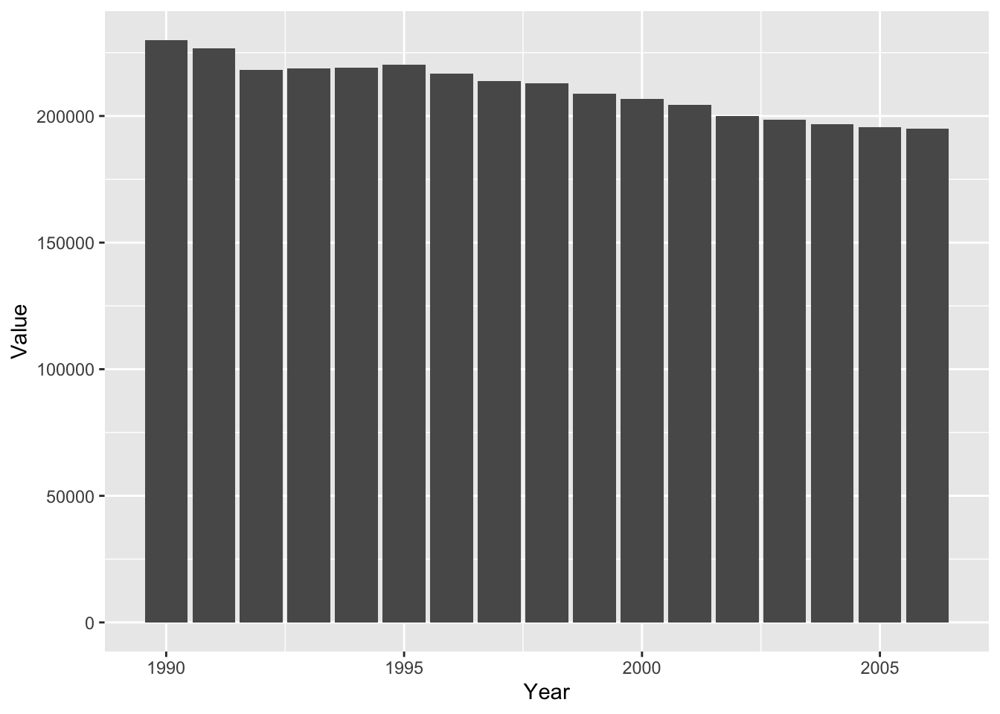
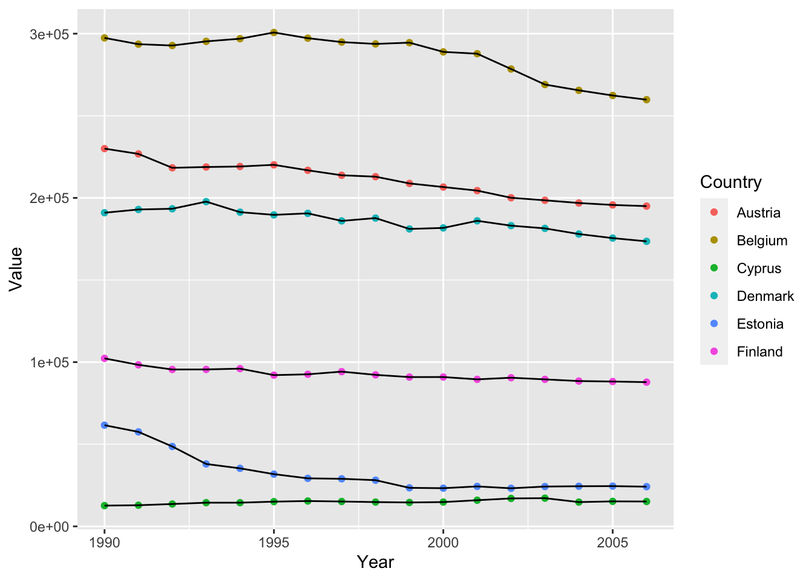
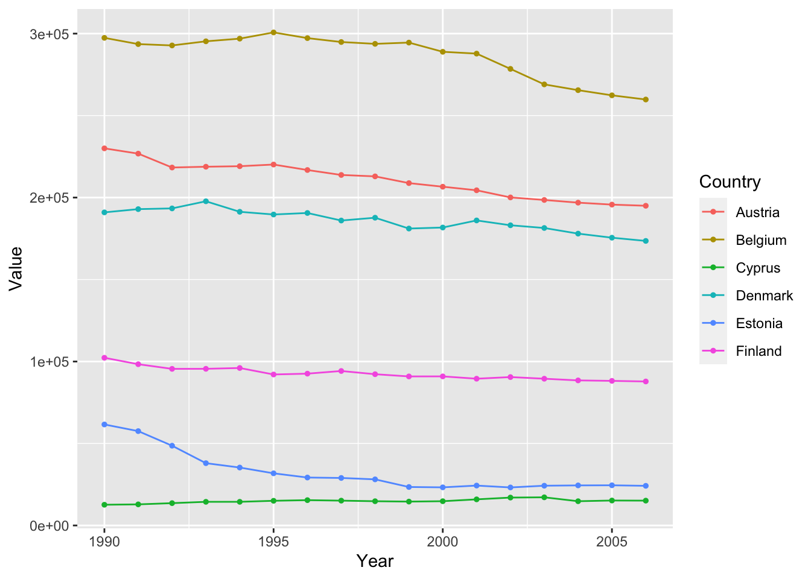
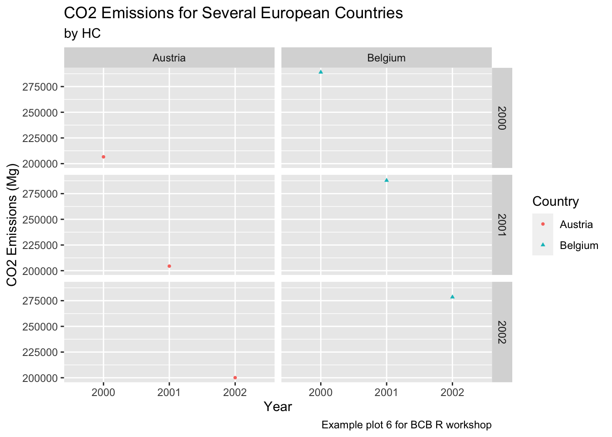
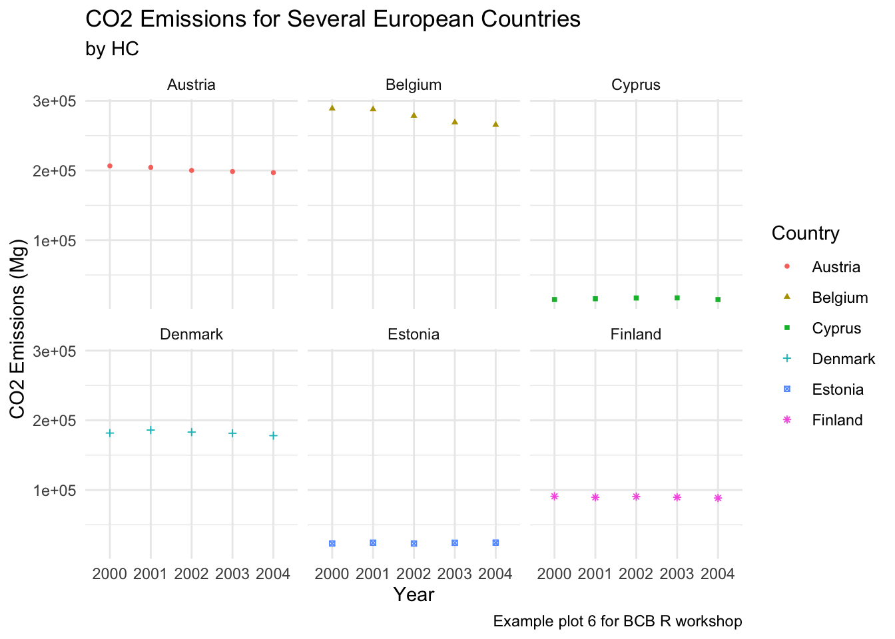

Supplement 1: Tidyverse Workflow
Author: Henri Chung, Jia Liu
Date: 03/27/2021
1 Packages and The Tidyverse.
In the first workshop, we focused on basic R functions that come natively with R. Although these functions are relatively simple, they can be combined and re-arranged in many different functions to perform a wide variety of analyses. However, knowing how and when to combine these functions can be difficult, and the resulting code can become difficult to understand and use. To make it easier to reuse and share R code, these functions are commonly written into packages and uploaded to the Comprehensive R Archive Network or CRAN. CRAN hosts a wide variety of specialized packages with specific functions for different analyses; time series, spatial, microbiome, sequence, etc.
Packages from CRAN can be downloaded and used as follows:
The library() function tells R to immediately make available any functions from the package for use. If you did not use library(), you would have to specify which package a command came from before using it. This is necessary to avoid situations where to packages have created functions with the same name. While loading the necessary packages prior to perform an analysis is relatively commonplace, relying on too many packages may lead to cases where you accidentally use a function from a different package than you intended.
#run intersect from the dplyr package without first loading it.
across()
#tell R where the intersect function comes from with ::
dplyr::across()
#load the dplyr package first, and then use intersect
library(dplyr)
across()
#compare the function of base::intersect and dplyr::intersect
?intersect()Today, we’re going to be looking at a collection of packages known as the tidyverse. The tidyverse is a collection of “highly opinionated” packages for data manipulation and analysis in R. The tidyverse relies on a set of “tidy” data principles, which are rules for the way that data should be formatted and organized prior to analysis. This usually requires users to reformat their data into a “tidy” format as a necessary step before performing the analysis. If you agree with the tidy principles, following these steps may be an obvious and necessary step. Although there is a sizable group of R users that think these requirements are tedious. Regardless of who is right, the tidyverse is one of the most commonly used packages in R and many R users have come to rely on their functions.
In order for data to be tidy, it must be:
- Each variable must have its own column.
- Each observation must have its own row.
- Each value must have its own cell.
2 Import data to R
Let’s start by importing some data into R. We will be looking at a dataset of greenhouse emission from agricultural area of European countries during Year \(1990\)-\(2006\). The original dataset was downloaded from the European Union Open Data Portal. I have already reorganized this data into a tidy format.
Before talking about how to access values in such dataframes, let’s first see how we can import a dataset into R: We will use the utils::read.table function.
#read in the greenhouse gas data.
ghg <- utils::read.table("data/europ_agriculture_GHG.csv", header = TRUE, sep = ",")
#read.csv
ghg <- utils::read.csv("data/europ_agriculture_GHG.csv", header = TRUE)
#read.tsv
#ghg <- utils::read.table("data/europ_agriculture_GHG.csv", header = TRUE, sep = "\t")
#ghg <- utils::read.tsv("data/europ_agriculture_GHG.csv", header = TRUE)Let’s take a quick look at the data:
# return the first 6 rows of the object which is dataframe "ghg" here
head(ghg)## Country_code Country Sector_code Sector Pollutant Year Value Units
## 1 AT Austria 4 Agriculture CH4 1990 230015.5 Mg
## 2 AT Austria 4 Agriculture CH4 1991 226798.0 Mg
## 3 AT Austria 4 Agriculture CH4 1992 218327.0 Mg
## 4 AT Austria 4 Agriculture CH4 1993 218808.7 Mg
## 5 AT Austria 4 Agriculture CH4 1994 219121.4 Mg
## 6 AT Austria 4 Agriculture CH4 1995 220144.6 Mg# return the last 6 rows.
tail(ghg)## Country_code Country Sector_code Sector Pollutant Year Value Units
## 2171 TR Turkey 4 Agriculture N2O 2001 424.0000 Mg
## 2172 TR Turkey 4 Agriculture N2O 2002 444.0000 Mg
## 2173 TR Turkey 4 Agriculture N2O 2003 438.0000 Mg
## 2174 TR Turkey 4 Agriculture N2O 2004 484.0000 Mg
## 2175 TR Turkey 4 Agriculture N2O 2005 510.2228 Mg
## 2176 TR Turkey 4 Agriculture N2O 2006 510.2228 Mg# return the dimensions
dim(ghg)## [1] 2176 8# return the number of rows
nrow(ghg)## [1] 2176# return the number of columns
ncol(ghg)## [1] 8#View the ghg table as a separate window
#View()Notice that the datasets you work with in practical may not be clean, for example, there maybe missing values. Here is a link that talks about how to deal with missing values in R. You may find more solutions or suggestions online.
3 Data wrangling with tidyverse
The first tidyverse package we’ll look at is dplyr (pronounced “d-plier”), which provides basic functions for data manipulation. These functions can be categorized based on how they operate on a table.
- Rows
filter()chooses rows based on column values.slice()chooses rows based on location.arrangechanges the order of the rows.
- Columns
selectchanges whether or not a column is selected.renamechanges the name of the columns.mutatechanges the values of the columns and creates new columns.
- Groups of rows:
summarisecollapses a group into a single row.
Lets look at each of the functions in an example.
3.1 Filter rows based on column values.
The filter function allows us to choose specific parts of our data to look at based on the values of certain variables. We would use this function to answer questions such as; “What were the emissions after the year 2000?” or “What were the total emissions produced by the country Belgium?”.
#filter year > 2000
ghg_post2005 <- filter(ghg, Year > 2000)
#filter on country = belgium
ghg_belgium <- filter(ghg, Country == "Belgium")We can also combine multiple filter commands together using AND/OR expressions.
#AND with &
ghg_2005andbelgium <- filter(ghg, Year == 2005 & Country == "Belgium")
#OR with |
ghg_2005or2006 <- filter(ghg, Year == 2005 | Year == 2006)Question: Why do we need to use == instead of =?
3.2 Slice rows based on location.
The slice function cuts out rows of the data based on its numerical position in the table. We would use this function if we wanted to look at rows 20:40 in the dataset. Slice also comes with several helper functions to take out different arrangements of the dataset.
#slice out rows 20:40
ghg_20to40 <- slice(ghg, 20:40)
#slice out the first 10 rows.
ghg_first10 <- slice_head(ghg, n = 10)
#slice out the last 10 rows.
ghg_last10 <- slice_tail(ghg, n = 10)
#take a random sample slice of 10 rows.
ghg_sample10 <- slice_sample(ghg, n = 10)Question: How would you use slice to take every 10th row in the dataset? (row 10, 20, 30, etc)
3.3 Arrange the rows into a specific order.
The arrange function allows to move around the rows of the data into a specific order. This function is typically used when we want to sort the data based on a specific column value. For example, “Re-arrange the rows so that the highest emission values come first.” or “Re-arrange the rows first by highest emissions, then by country”.
#arrange by country
ghg_bycountry <- arrange(ghg, Country)
#arrange by country and emission values
ghg_bycountry_emissions <- arrange(ghg, Value)
#arrange by country and descending emission values
ghg_bycountry_descemissions <- arrange(ghg, desc(Value))3.4 Select columns by name.
The select function is used to choose specific columns of the data based on their column name. This is useful when the data has many columns but you are only interested in specific ones. The other columns may not contain useful information or you might not want to look at the information for a specific analysis. For example, in our ghg dataset, the Sector_code and Country_code columns are not very useful because we are not familiar with their code system. If we wanted to know what sector the data was from, we could use the more descriptive Sector or Country columns.
#select the Country and Value column's from the data.
ghg_country_value <- select(ghg, c("Country", "Value"))
#select every column except the Sector_code column.
ghg_nocode <- select(ghg, -c("Sector_code", "Country_code"))More options for selecting columns.
3.5 Rename columns to a different name.
The rename function is to change the name of specific columns. One common usecase for the rename function is when you are working across multiple datasets with different names for the same column variable. For example, the column for country may be named Country in one table and country in another. These values in these two columns mean the same thing, but the slightly different capitalization would make it annoying to work back and forth between both. We can use the rename function to change the names so that they are the same.
#rename "Country" column to "country", notice the syntax in the command is reversed.
ghg_renamed <- rename(ghg, country = Country)
colnames(ghg_renamed)## [1] "Country_code" "country" "Sector_code" "Sector" "Pollutant"
## [6] "Year" "Value" "Units"#We can rename multiple columns at once.
ghg_renamed2 <- rename(ghg, country = Country, year = Year)3.6 Mutate columns to a new value.
The mutate function can be used to change the values within a column or to create a new column based on a previous column. In our ghg dataset, the numbers in the dataset are in Mg or ‘Megagrams’, but what if we wanted our values in Kilograms (Kg) or Gigagrams? (Gg). We can either change the columns in place or create new columns to represent these values.
#change values and units to kilograms in place.
ghg_kg <- mutate(ghg, Value = Value*1000, Unit = "kg")
#create new column for value and units in gigagrams.
ghg_gg <- mutate(ghg, Value2 = Value/1000, Unit2 = "Gg")Excerise: The tolower() function converts all of the characters in a string to lowercase. Use the tolower() and mutate() to change all of the values int he Country column to lowercase.
3.7 Summarise the data by column and row values.
The Summarise function allows us to calculate different summary statistics on the dataset in a single step. We use summarise to answer questions like; “What was the average emission value?”, What about the standard deviation, maximum, or minumum values? When combined with the group_by function, we can calculate these values for specific subgroups of the data in a single step.
ghg_summary = summarise(ghg, mean = mean(Value), sd = sd(Value), min = min(Value), max = max(Value))
ghg_summary_country <- summarise( group_by(ghg, Country), mean = mean(Value), sd = sd(Value), min = min(Value), max = max(Value))Exercise: How would you find the mean value for emissions per year?
3.8 Combining Functions and the Pipe %>%
Now that we understand the basic functions, we can start combining them in order to analyze our data. For example, what if we wanted to know which countries had the highest average greenhouse gas emissions? We would use a combination of the group_by(), summarise() and arrange() functions.
grouped_ghg <- group_by(ghg, Country)
summarised_ghg <- summarise(grouped_ghg, mean = mean(Value))
arranged_ghg <- arrange(summarised_ghg, desc(mean))The result we wanted is in arranged_ghg, but we have also created the grouped_ghg and summarised_ghg tables as part of our analysis. While these tables were necessary to get our final result, we don’t need to keep them around anymore. We can remove them from our workspace with the rm function, but that can get tedious if there are multiple table. Creating additional objects can also make the code look cluttered and difficult to read. To remedy this, tidyverse functions includes support for a pipe operator %>%. The pipe operator “pipes” the output of one function into another. Using the pipe, we can rewrite the previous chunk as follows.
arrange_ghg2 <- ghg %>%
group_by(Country) %>%
summarise(mean = mean(Value)) %>%
arrange(desc(mean))Using the pipe, we avoid creating unnecessary additional objects and additional lines of code, while making the code easier to read and follow.
The pipe operator
%>%does not actually manipulate objects in place. The pipe actually creates an additional object behind the scenes, deleted the original, and then renames and returns the additional table. This means that while the pipe operator is useful for keeping your workspace clean, it does not help if you are limited in the number of objects you can create in your computers memory.
3.8.1 Exercise
Using
ghgas your input data, complete the following operations. You do not have to use%>%, but are encouraged to do so. The exercises will get progressively more difficult, you do not have to complete all of the questions.- Take
ghgdata, select columnsCountry,Pollutant,Year,Valuewithselectfunction. - Filter out rows with
Pollutant == N2O. - Rename all of the columns to lowercase using the
renamefunction. - Assign the values for the emissions of N20 to
N2O_ghg(Hint: use<-to assign value to variable). - Summarise the average CO2 emission values for each country using the
filter,group_by, andsummarisefunctions. - The
pullfunction extracts the values of a column of a dataframe and puts it into a vector. Using theselect,pullanduniquefunctions, determine how many countries are included in the dataset. - Using the
group_byandsummarisefunctions to find out which greenhouse gas emission has the highest standard deviation. - Using the
filter,group_byandsummarisefunctions to find out which countries had the highest CH4 emission for from 1995 to 2000.
- Take
4 Visualizing data with ggplot2
The dplyr functions are extremely useful for calculating summary statistics on the tables. However, sometimes relationships are more easily understood by plotting and visualiizing the data in a graph. Similar to the tidy principles for data organization, the authors of the tidyverse believe in a very specific philosophy for creating graphs and other data visualizations. This philosophy and the functions that work with it are encompassed in the ggplot2 package.
In ggplot2 every graph is composed of multiple different mappings. To create a graph, you must first start by placing down a base layer, and iteratively adding more and more mappings to it to specify the design and layout of your graph. This is analogous to our data analysis steps from before, where an analysis was built by applying multiple functions in a row with %>%.
Let’s start by building a basic graph that shows how CH4 emissions have increased over time in Austria. First, we must subset our data of interest.
ghg2 <- ghg %>%
filter(Country == "Austria" & Pollutant == "CH4")
ghg2## Country_code Country Sector_code Sector Pollutant Year Value Units
## 1 AT Austria 4 Agriculture CH4 1990 230015.5 Mg
## 2 AT Austria 4 Agriculture CH4 1991 226798.0 Mg
## 3 AT Austria 4 Agriculture CH4 1992 218327.0 Mg
## 4 AT Austria 4 Agriculture CH4 1993 218808.7 Mg
## 5 AT Austria 4 Agriculture CH4 1994 219121.4 Mg
## 6 AT Austria 4 Agriculture CH4 1995 220144.6 Mg
## 7 AT Austria 4 Agriculture CH4 1996 216805.6 Mg
## 8 AT Austria 4 Agriculture CH4 1997 213784.0 Mg
## 9 AT Austria 4 Agriculture CH4 1998 212922.0 Mg
## 10 AT Austria 4 Agriculture CH4 1999 208821.8 Mg
## 11 AT Austria 4 Agriculture CH4 2000 206616.4 Mg
## 12 AT Austria 4 Agriculture CH4 2001 204444.5 Mg
## 13 AT Austria 4 Agriculture CH4 2002 200088.8 Mg
## 14 AT Austria 4 Agriculture CH4 2003 198537.5 Mg
## 15 AT Austria 4 Agriculture CH4 2004 196893.0 Mg
## 16 AT Austria 4 Agriculture CH4 2005 195704.3 Mg
## 17 AT Austria 4 Agriculture CH4 2006 194993.8 MgNow that we have our data, we can start working on our plot. In the first layer of our plot, we must declare the aesthetics or what variables we want to map to specific parts of our base layer. In most cases, this first means specifying which aspects of our data are going to be our X-axis and our Y-axis. If we want to visualize the relationship of CH4 emissions over time, what would our X-axis and Y-axis be?
#we tell ggplot our intended mappings with the aesthetics function (confusing I know)
ghg2_plot <- ggplot(ghg2, aes(x = Year, y = Value))
ghg2_plot ##
## Geoms
Our plot now consists of a base layer! As you can see, ggplot has correctly labeled the X and Y axis with what we told it. However, the graph is missing geoms (short for geometric_elements), or the name of the object to draw each observation. A geom may be a point (scatterplot), a line (line plot), or a bar (bar plot).
#scatterplot
ghg2_plot_scatter <- ggplot(ghg2, aes(x = Year, y = Value)) + geom_point()
ghg2_plot_scatter#lineplot
ghg2_plot_line <- ghg2_plot + geom_line()
ghg2_plot_line#barplot
ghg2_plot_bar <- ghg2_plot + geom_bar(stat = "identity")
ghg2_plot_barSome geoms can be used to perform additional analysis on the data. The geom_smooth function fits a smooth line to the data following a specific formula. We can use the geom_smooth function to plot the slope of the line using a linear model.
#plot smooth line with linear model
ghg2_plot_lm <- ggplot(ghg2, aes(x = Year, y = Value)) + geom_smooth(method = "lm")
ghg2_plot_lm## `geom_smooth()` using formula 'y ~ x'
#plot smooth line with Local regression (loess)
ghg2_plot_loess <- ggplot(ghg2, aes(x = Year, y = Value)) + geom_smooth(method = "loess")
ghg2_plot_loess## `geom_smooth()` using formula 'y ~ x'#we can also stack multiple geoms on top of each other.
ghg2_plot_combo <- ggplot(ghg2, aes(x = Year, y = Value)) + geom_point() + geom_line()
ghg2_plot_combo ##Scales - Color, Size, and Shape
Once we have a basic plot, we can start specifying additional specifications call scales. Scales map values from the data to aesthetics such as color, size, and shape to customize our plot. These scales can be input in two ways, either as a single value or varying with a specific variable. To visualize this, we will recreate our previous graph but include additional countries in addition to Austria. We will use the %in% operator to specify what countries we want to include. We can separate the different countries by specificing a group aesthetic.
ghg3_plot <- ghg %>%
filter(Pollutant == "CH4" & Country %in% c("Austria", "Belgium", "Cyprus", "Denmark", "Estonia", "Finland")) %>%
ggplot(aes(x = Year, y = Value, group = Country)) + geom_point() + geom_line()
ghg3_plotSpecifying a specific color.
ghg3_plot1 <- ghg %>%
filter(Pollutant == "CH4"& Country %in% c("Austria", "Belgium", "Cyprus", "Denmark", "Estonia", "Finland")) %>%
ggplot(aes(x = Year, y = Value, group = Country)) + geom_point(color = "red") + geom_line(color = "red")
ghg3_plot1Specifying a color mapping to a variable.
ghg3_plot2 <- ghg %>%
filter(Pollutant == "CH4" & Country %in% c("Austria", "Belgium", "Cyprus", "Denmark", "Estonia", "Finland")) %>%
ggplot(aes(x = Year, y = Value, group = Country, color = Country)) + geom_point() + geom_line()
ghg3_plot2 If we only want to color the points or the lines, We can also specify colors inside specific geoms
ghg3_plot3 <- ghg %>%
filter(Pollutant == "CH4" & Country %in% c("Austria", "Belgium", "Cyprus", "Denmark", "Estonia", "Finland")) %>%
ggplot(aes(x = Year, y = Value, group = Country)) + geom_point(aes(color = Country)) + geom_line()
ghg3_plot3
ghg3_plot5 <- ghg %>%
filter(Pollutant == "CH4"& Country %in% c("Austria", "Belgium", "Cyprus", "Denmark", "Estonia", "Finland")) %>%
ggplot(aes(x = Year, y = Value, group = Country)) + geom_point() + geom_line(aes(color = Country))
ghg3_plot5
We can improve the readability of the plot by making the points drawn by geom_point() smaller.
ghg3_plot5 <- ghg %>%
filter(Pollutant == "CH4" & Country %in% c("Austria", "Belgium", "Cyprus", "Denmark", "Estonia", "Finland")) %>%
ggplot(aes(x = Year, y = Value, group = Country, color = Country)) + geom_point(size = 1) + geom_line()
ghg3_plot5
Similiar to size and color, we can also specific different shapes to each of our
ghg3_plot4 <- ghg %>%
filter(Pollutant == "CH4" & Country %in% c("Austria", "Belgium", "Cyprus", "Denmark", "Estonia", "Finland")) %>%
ggplot(aes(x = Year, y = Value, group = Country, color = Country)) + geom_point(size = 1, aes(shape = Country))
ghg3_plot4
4.1 Labels and Scales
So far, our graphs look good. But without proper labeling, it can hard for a view to understand the graph. To complete the graph, we must add proper scale labels and titles to our plot. We will add the proper labels to our graph with the labs() function.
ghg3_plot5 <- ghg %>%
filter(Pollutant == "CH4" & Country %in% c("Austria", "Belgium", "Cyprus", "Denmark", "Estonia", "Finland")) %>%
ggplot(aes(x = Year, y = Value, group = Country, color = Country)) + geom_point(size = 1, aes(shape = Country)) +
labs(title = "CO2 Emissions for Several European Countries", y = "CO2 Emissions (Mg)")
ghg3_plot5The labs() function also has arguments for captions and subtitles.
ghg3_plot6 <- ghg %>%
filter(Pollutant == "CH4" & Country %in% c("Austria", "Belgium", "Cyprus", "Denmark", "Estonia", "Finland")) %>%
ggplot(aes(x = Year, y = Value, group = Country, color = Country)) + geom_point(size = 1, aes(shape = Country)) +
labs(title = "CO2 Emissions for Several European Countries", y = "CO2 Emissions (Mg)", subtitle = "by HC", caption = "Example plot 6 for BCB R workshop")
ghg3_plot64.2 Faceting and Themes
Faceting is a way to create multiple subplots of your data in a single command. This allows you to rapidly compare patterns in different parts of the data to see if they are the same or different. There are two ways to facet a graph, facet_wrap and facet_grid. facet_wrap will create multiple subplots and place them in order rowise, while facet_grid will snap the subplots to a predetermined grid. The easiest way to see the difference is with an example.
countries = c("Austria", "Belgium", "Cyprus", "Denmark", "Estonia", "Finland")
years = c(2000, 2001, 2002, 2003, 2004, 2005)
ghg3_plot7 <- ghg %>%
filter(Pollutant == "CH4" & Country %in% countries & Year %in% years) %>%
ggplot(aes(x = Year, y = Value, group = Country, color = Country)) + geom_point(size = 1, aes(shape = Country)) +
labs(title = "CO2 Emissions for Several European Countries", y = "CO2 Emissions (Mg)", subtitle = "by HC", caption = "Example plot 6 for BCB R workshop") +
facet_wrap(~Country)
ghg3_plot7countries = c("Austria", "Belgium")
years = c(2000, 2001, 2002)
ghg3_plot8 <- ghg %>%
filter(Pollutant == "CH4" & Country %in% countries & Year %in% years) %>%
ggplot(aes(x = as.factor(Year), y = Value, group = Country, color = Country)) + geom_point(size = 1, aes(shape = Country)) +
labs(title = "CO2 Emissions for Several European Countries", y = "CO2 Emissions (Mg)", x = "Year", subtitle = "by HC", caption = "Example plot 6 for BCB R workshop") +
facet_wrap(Year~Country)
ghg3_plot8**What effect does changing x = Year to x = as.factor(Year) have on the graph?
countries = c("Austria", "Belgium")
years = c(2000, 2001, 2002)
ghg3_plot8 <- ghg %>%
filter(Pollutant == "CH4" & Country %in% countries & Year %in% years) %>%
ggplot(aes(x = as.factor(Year), y = Value, group = Country, color = Country)) + geom_point(size = 1, aes(shape = Country)) +
labs(title = "CO2 Emissions for Several European Countries", y = "CO2 Emissions (Mg)", x = "Year", subtitle = "by HC", caption = "Example plot 6 for BCB R workshop") +
facet_grid(Year~Country)
ghg3_plot8 Lastly, we can change the look and feel of our plots using themes. Themes apply a bunch of specific plot specifications at once to create a single overall “look” for your graph. This means that if you wanted, you could recreate a theme on your own by specifying each individual part of your graph, but often it is easier to use a pre-written theme to create a single look. There are many themes available in ggplot, and some artistic R users create their own themes and upload them as packages for others to use. Below, we look at the effect of a couple included themes in R.
Black and White
countries = c("Austria", "Belgium", "Cyprus", "Denmark", "Estonia", "Finland")
years = c(2000, 2001, 2002, 2003, 2004)
ghg3_plot9 <- ghg %>%
filter(Pollutant == "CH4" & Country %in% countries & Year %in% years) %>%
ggplot(aes(x = as.factor(Year), y = Value, group = Country, color = Country)) + geom_point(size = 1, aes(shape = Country)) +
labs(title = "CO2 Emissions for Several European Countries", y = "CO2 Emissions (Mg)", x = "Year", subtitle = "by HC", caption = "Example plot 6 for BCB R workshop") +
facet_wrap(~Country)
ghg3_plot9 + theme_bw() Minimal
ghg3_plot9 + theme_minimal()Classic
ghg3_plot9 + theme_classic() ## Exercise
This link contains a list of many of the possible plots you can make with ggplot. Using the link and the ghg data, make a plot that answers a question about the data. Here are some examples:
- Which countries have the highest CO2 emissions in 2002?
- Is the emissions for the
GWPpollutant increasing or decreasing over time? - What year had the highest
CO2emissions? - Visualize the average level of each pollutant produced by each country.
- For each pollutant, find the country and year in which the emissions were highest.